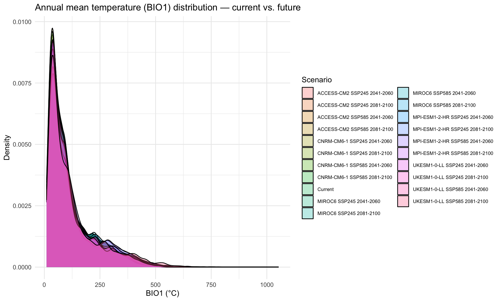

library(tidyverse)
library(terra)
library(geodata)Step 8: Future Climate Data
Overview
Download and prepare future climate data for 5 GCMs, 2 SSPs, and 2 time periods (20 total future climate stacks). Key changes from v1:
- 5 GCMs (was 3): MIROC6, MPI-ESM1-2-HR, UKESM1-0-LL + ACCESS-CM2 and CNRM-CM6-1
- Match all selected variables including ENVIREM and CHELSA-derived layers (using delta-change method where future versions aren’t directly available)
- Explicit temperature unit documentation
Scenario matrix: 5 GCMs × 2 SSPs × 2 time periods = 20 stacks
Note on ENVIREM/CHELSA future variables: Direct future projections for ENVIREM and CHELSA are not available for all GCMs. We use a delta-change approach: compute the proportional change in the underlying WorldClim variables between current and future, and apply that change to the current ENVIREM/CHELSA values. This is a standard approach in SDM studies (e.g., Raghavan et al. 2019).
base_dir <- "~/Library/CloudStorage/OneDrive-CSIRO/OneDrive - Docs/01_Projects/Hlongicornis_SDM/"
processed_v2 <- file.path(base_dir, "processed_data_2")
figures_dir <- file.path(base_dir, "figures_2")
outputs_dir <- file.path(base_dir, "outputs_2")
data_dir <- file.path(base_dir, "data")
temp_dir <- file.path(base_dir, "temp")
terraOptions(memfrac = 0.6, tempdir = temp_dir)1. Define scenario matrix
# GCMs — 5 models spanning a range of climate sensitivities
gcms <- c(
"MIROC6", # Japanese model, moderate-high sensitivity
"MPI-ESM1-2-HR", # German model, moderate sensitivity
"UKESM1-0-LL", # UK model, high sensitivity
"ACCESS-CM2", # Australian model, good regional performance for Oceania
"CNRM-CM6-1" # French model, moderate sensitivity
)
# SSPs (Shared Socioeconomic Pathways)
ssps <- c("245", "585")
# SSP2-4.5: "middle of the road" — moderate emissions
# SSP5-8.5: "fossil-fuelled development" — high emissions
# Time periods
periods <- c("2041-2060", "2081-2100")
# Full scenario grid
scenarios <- expand_grid(
gcm = gcms,
ssp = ssps,
period = periods
)
sprintf("Total future scenarios: %d", nrow(scenarios))
scenarios[1] "Total future scenarios: 20"
# A tibble: 20 × 3
gcm ssp period
<chr> <chr> <chr>
1 MIROC6 245 2041-2060
2 MIROC6 245 2081-2100
3 MIROC6 585 2041-2060
4 MIROC6 585 2081-2100
5 MPI-ESM1-2-HR 245 2041-2060
6 MPI-ESM1-2-HR 245 2081-2100
7 MPI-ESM1-2-HR 585 2041-2060
8 MPI-ESM1-2-HR 585 2081-2100
9 UKESM1-0-LL 245 2041-2060
10 UKESM1-0-LL 245 2081-2100
11 UKESM1-0-LL 585 2041-2060
12 UKESM1-0-LL 585 2081-2100
13 ACCESS-CM2 245 2041-2060
14 ACCESS-CM2 245 2081-2100
15 ACCESS-CM2 585 2041-2060
16 ACCESS-CM2 585 2081-2100
17 CNRM-CM6-1 245 2041-2060
18 CNRM-CM6-1 245 2081-2100
19 CNRM-CM6-1 585 2041-2060
20 CNRM-CM6-1 585 2081-21002. Load current climate data
We need the current WorldClim bioclimatic variables both for the final selected variables and for computing the delta-change ratios for ENVIREM/CHELSA layers.
# Current environmental stack (selected variables, Aus/NZ)
env_current <- rast(file.path(processed_v2, "env_selected_aus_nz.tif"))
selected_vars <- names(env_current)
sprintf("Selected variables for projection: %s",
paste(selected_vars, collapse = ", "))
# Identify which variables come from each source
worldclim_vars <- selected_vars[grepl("^bio", selected_vars)]
envirem_vars <- selected_vars[grepl("(cmi_idx|aridity_idx|pet_idx)", selected_vars)]
chelsa_vars <- selected_vars[grepl("vpd_annual", selected_vars)]
sprintf("WorldClim: %s", paste(worldclim_vars, collapse = ", "))
sprintf("ENVIREM: %s", paste(envirem_vars, collapse = ", "))
sprintf("CHELSA: %s", paste(chelsa_vars, collapse = ", "))
# Load current WorldClim full global stack (for delta-change calculations)
# We need current bio12 (annual precip) and bio1 (mean temp) as baselines
# for scaling ENVIREM/CHELSA to future conditions
worldclim_path <- file.path(data_dir, "worldclim", "climate", "wc2.1_2.5m")[1] "Selected variables for projection: bio2, bio3, bio13, aridity_idx, vpd_annual"
[1] "WorldClim: bio2, bio3, bio13"
[1] "ENVIREM: aridity_idx"
[1] "CHELSA: vpd_annual"3. Download future WorldClim bioclimatic variables
Download future bioclimatic variables for all 20 scenarios. The geodata package handles CMIP6 data from WorldClim.
# Directory for future climate data
future_dir <- file.path(data_dir, "future_climate")
dir.create(future_dir, showWarnings = FALSE, recursive = TRUE)
# Aus/NZ extent for cropping
aus_nz_ext <- ext(110, 180, -48, -8)
# Download and process each scenario
for (i in seq_len(nrow(scenarios))) {
gcm <- scenarios$gcm[i]
ssp <- scenarios$ssp[i]
period <- scenarios$period[i]
scenario_id <- sprintf("%s_ssp%s_%s", gcm, ssp, period)
cache_file <- file.path(future_dir, paste0(scenario_id, "_bioclim.tif"))
if (file.exists(cache_file)) {
message(sprintf("[%d/%d] %s — cached", i, nrow(scenarios), scenario_id))
next
}
message(sprintf("[%d/%d] Downloading %s...", i, nrow(scenarios), scenario_id))
tryCatch({
# Download CMIP6 bioclimatic variables via geodata
future_bio <- cmip6_world(
model = gcm,
ssp = ssp,
time = period,
var = "bioc",
res = 2.5,
path = file.path(data_dir, "worldclim")
)
# Rename layers to match our convention (bio1, bio2, ..., bio19)
names(future_bio) <- paste0("bio", 1:nlyr(future_bio))
# Crop to Aus/NZ
future_bio_aus <- crop(future_bio, aus_nz_ext)
# Save the cropped bioclim stack
writeRaster(future_bio_aus, cache_file, overwrite = TRUE)
message(sprintf(" Saved: %s (%d layers)", scenario_id, nlyr(future_bio_aus)))
}, error = function(e) {
message(sprintf(" ERROR downloading %s: %s", scenario_id, e$message))
})
}4. Compute future ENVIREM/CHELSA variables using delta-change method
For ENVIREM (CMI, aridity, PET) and CHELSA (VPD), we don’t have direct future projections from each GCM. Instead, we compute relative changes in the underlying climate variables and apply them to the current ENVIREM/CHELSA values.
Delta-change logic:
- PET scales primarily with temperature:
PET_future = PET_current × (bio1_future / bio1_current) - CMI (moisture index) scales with precipitation relative to PET:
CMI_future = CMI_current × (bio12_future / bio12_current) / (bio1_future / bio1_current)(simplified: more precip → higher CMI, more temp → lower CMI) - Aridity is inversely related to moisture: apply inverse of CMI change
- VPD scales roughly with temperature (exponential relationship):
VPD_future = VPD_current × exp(0.06 × (bio1_future - bio1_current))(Clausius-Clapeyron: ~6% increase per 1°C warming)
# Load current WorldClim bio1 and bio12 for Aus/NZ (for delta ratios)
bio1_current <- rast(file.path(worldclim_path, "wc2.1_2.5m_bio_1.tif"))
bio12_current <- rast(file.path(worldclim_path, "wc2.1_2.5m_bio_12.tif"))
bio1_current <- crop(bio1_current, aus_nz_ext)
bio12_current <- crop(bio12_current, aus_nz_ext)
# Load current ENVIREM/CHELSA layers for Aus/NZ
# These are already in the selected env stack
envirem_chelsa_current <- env_current[[c(envirem_vars, chelsa_vars)]]
# Process each scenario
for (i in seq_len(nrow(scenarios))) {
gcm <- scenarios$gcm[i]
ssp <- scenarios$ssp[i]
period <- scenarios$period[i]
scenario_id <- sprintf("%s_ssp%s_%s", gcm, ssp, period)
output_file <- file.path(future_dir, paste0(scenario_id, "_all_selected.tif"))
if (file.exists(output_file)) {
message(sprintf("[%d/%d] %s — final stack cached", i, nrow(scenarios), scenario_id))
next
}
# Load the future WorldClim bioclimatic variables
bioclim_file <- file.path(future_dir, paste0(scenario_id, "_bioclim.tif"))
if (!file.exists(bioclim_file)) {
message(sprintf(" Skipping %s — bioclim file missing", scenario_id))
next
}
future_bio <- rast(bioclim_file)
# Extract selected WorldClim variables
future_wc <- future_bio[[worldclim_vars]]
# --- Delta-change for ENVIREM variables ---
bio1_future <- future_bio[["bio1"]]
bio12_future <- future_bio[["bio12"]]
# Temperature ratio (avoid division by zero with a small floor)
temp_ratio <- bio1_future / max(bio1_current, 0.1)
# Precipitation ratio
precip_ratio <- bio12_future / max(bio12_current, 1)
future_envirem_chelsa <- list()
if ("pet_idx" %in% selected_vars) {
# PET scales with temperature
future_envirem_chelsa[["pet_idx"]] <-
envirem_chelsa_current[["pet_idx"]] * abs(temp_ratio)
}
if ("cmi_idx" %in% selected_vars) {
# CMI: moisture balance scales with precip/PET ratio
future_envirem_chelsa[["cmi_idx"]] <-
envirem_chelsa_current[["cmi_idx"]] * precip_ratio / max(abs(temp_ratio), 0.1)
}
if ("aridity_idx" %in% selected_vars) {
# Aridity inversely related to moisture
future_envirem_chelsa[["aridity_idx"]] <-
envirem_chelsa_current[["aridity_idx"]] * abs(temp_ratio) / max(precip_ratio, 0.1)
}
if ("vpd_annual" %in% selected_vars) {
# VPD follows Clausius-Clapeyron (~6% per °C)
temp_change <- bio1_future - bio1_current
future_envirem_chelsa[["vpd_annual"]] <-
envirem_chelsa_current[["vpd_annual"]] * exp(0.06 * temp_change)
}
# Stack all future layers in the correct order
future_stack <- future_wc
for (var_name in c(envirem_vars, chelsa_vars)) {
if (var_name %in% names(future_envirem_chelsa)) {
future_stack <- c(future_stack, future_envirem_chelsa[[var_name]])
}
}
# Verify layer names match selected variables
names(future_stack) <- selected_vars
# Ensure alignment with current env raster
if (!compareGeom(future_stack, env_current, stopOnError = FALSE)) {
future_stack <- resample(future_stack, env_current, method = "bilinear")
}
# Save
writeRaster(future_stack, output_file, overwrite = TRUE)
message(sprintf("[%d/%d] %s — saved (%d layers)",
i, nrow(scenarios), scenario_id, nlyr(future_stack)))
}5. Verify all scenarios downloaded successfully
# Check which scenarios have complete data
download_status <- scenarios %>%
mutate(
scenario_id = sprintf("%s_ssp%s_%s", gcm, ssp, period),
bioclim_file = file.path(future_dir, paste0(scenario_id, "_bioclim.tif")),
final_file = file.path(future_dir, paste0(scenario_id, "_all_selected.tif")),
bioclim_exists = file.exists(bioclim_file),
final_exists = file.exists(final_file)
)
sprintf("Scenarios with bioclim data: %d / %d",
sum(download_status$bioclim_exists), nrow(download_status))
sprintf("Scenarios with complete stacks: %d / %d",
sum(download_status$final_exists), nrow(download_status))
# Report any missing scenarios
missing <- download_status %>% filter(!final_exists)
if (nrow(missing) > 0) {
message("WARNING: Missing scenario stacks:")
print(missing %>% select(gcm, ssp, period))
}[1] "Scenarios with bioclim data: 20 / 20"
[1] "Scenarios with complete stacks: 20 / 20"6. Quick comparison of current vs. future climate
Verify that the future climate data shows expected warming and precipitation changes relative to current conditions.
# Sample the current and future bio1 values across Aus/NZ
# Use the correct layer name from env_current
bio1_name <- worldclim_vars[grepl(
"^bio.?1$|bio1",
worldclim_vars,
ignore.case = TRUE
)][1]
set.seed(7990)
sample_cells <- spatSample(
env_current[[bio1_name]],
size = 5000,
method = "random",
na.rm = TRUE,
xy = TRUE
)
current_bio1 <- sample_cells[[bio1_name]]
# Sample future bio1 for each scenario
future_bio1_data <- list()
future_bio1_data[["Current"]] <- tibble(
bio1 = current_bio1,
scenario = "Current"
)
for (i in seq_len(nrow(scenarios))) {
scenario_id <- sprintf(
"%s_ssp%s_%s",
scenarios$gcm[i],
scenarios$ssp[i],
scenarios$period[i]
)
final_file <- file.path(future_dir, paste0(scenario_id, "_all_selected.tif"))
if (file.exists(final_file)) {
future_stack <- rast(final_file)
future_vals <- extract(
future_stack[[bio1_name]],
sample_cells[, c("x", "y")]
)[[bio1_name]]
future_bio1_data[[scenario_id]] <- tibble(
bio1 = future_vals,
scenario = sprintf(
"%s SSP%s %s",
scenarios$gcm[i],
scenarios$ssp[i],
scenarios$period[i]
)
)
}
}
bio1_comparison <- bind_rows(future_bio1_data)
ggplot(bio1_comparison, aes(x = bio1, fill = scenario)) +
geom_density(alpha = 0.3) +
labs(
title = "Annual mean temperature (BIO1) distribution — current vs. future",
x = "BIO1 (°C)",
y = "Density",
fill = "Scenario"
) +
theme_minimal(base_size = 11) +
theme(legend.position = "right", legend.text = element_text(size = 7))
ggsave(
file.path(figures_dir, "08_future_climate_comparison.png"),
width = 10,
height = 6,
dpi = 300
)
7. Document temperature units
WorldClim 2.1 temperature units:
- Temperature variables (BIO1–BIO11) are in degrees Celsius (not ×10).
- This applies to both current and future (CMIP6) data from WorldClim 2.1.
- WorldClim v1.4 stored temperature × 10 (as integers), but v2.1 uses floating point in actual °C.
- Precipitation variables (BIO12–BIO19) are in millimetres.
This is important for interpreting response curves and setting any manual thresholds. A BIO1 value of 15 means 15°C (not 1.5°C).
8. Save scenario metadata
# Save the scenario grid for reference in Step 9
write_csv(scenarios, file.path(processed_v2, "future_scenarios.csv"))
# Save the file paths for each scenario
scenario_paths <- download_status %>%
select(gcm, ssp, period, scenario_id, final_file, final_exists) %>%
filter(final_exists)
write_csv(scenario_paths, file.path(processed_v2, "future_scenario_paths.csv"))
sprintf("Saved metadata for %d future climate scenarios", nrow(scenario_paths))[1] "Saved metadata for 20 future climate scenarios"Summary
tibble(
Item = c(
"GCMs",
"SSPs",
"Time periods",
"Total scenarios",
"Successfully prepared",
"WorldClim variables",
"Delta-change variables",
"Resolution"
),
Details = c(
paste(gcms, collapse = ", "),
"SSP2-4.5, SSP5-8.5",
"2041-2060, 2081-2100",
as.character(nrow(scenarios)),
as.character(sum(download_status$final_exists)),
paste(worldclim_vars, collapse = ", "),
paste(c(envirem_vars, chelsa_vars), collapse = ", "),
"2.5 arcmin (~5 km)"
)
)# A tibble: 8 × 2
Item Details
<chr> <chr>
1 GCMs MIROC6, MPI-ESM1-2-HR, UKESM1-0-LL, ACCESS-CM2, CNRM-C…
2 SSPs SSP2-4.5, SSP5-8.5
3 Time periods 2041-2060, 2081-2100
4 Total scenarios 20
5 Successfully prepared 20
6 WorldClim variables bio2, bio3, bio13
7 Delta-change variables aridity_idx, vpd_annual
8 Resolution 2.5 arcmin (~5 km) Session Information
sessionInfo()R version 4.4.1 (2024-06-14)
Platform: aarch64-apple-darwin20
Running under: macOS 26.2
Matrix products: default
BLAS: /Library/Frameworks/R.framework/Versions/4.4-arm64/Resources/lib/libRblas.0.dylib
LAPACK: /Library/Frameworks/R.framework/Versions/4.4-arm64/Resources/lib/libRlapack.dylib; LAPACK version 3.12.0
locale:
[1] en_US.UTF-8/en_US.UTF-8/en_US.UTF-8/C/en_US.UTF-8/en_US.UTF-8
time zone: Australia/Brisbane
tzcode source: internal
attached base packages:
[1] stats graphics grDevices utils datasets methods base
other attached packages:
[1] geodata_0.6-2 terra_1.8-93 lubridate_1.9.4 forcats_1.0.0
[5] stringr_1.6.0 dplyr_1.1.4 purrr_1.1.0 readr_2.1.6
[9] tidyr_1.3.1 tibble_3.3.1 ggplot2_4.0.0 tidyverse_2.0.0
loaded via a namespace (and not attached):
[1] utf8_1.2.6 generics_0.1.4 stringi_1.8.7 hms_1.1.4
[5] digest_0.6.37 magrittr_2.0.4 evaluate_1.0.5 grid_4.4.1
[9] timechange_0.3.0 RColorBrewer_1.1-3 fastmap_1.2.0 jsonlite_2.0.0
[13] scales_1.4.0 codetools_0.2-20 textshaping_1.0.3 cli_3.6.5
[17] crayon_1.5.3 rlang_1.1.7 bit64_4.6.0-1 withr_3.0.2
[21] yaml_2.3.10 parallel_4.4.1 tools_4.4.1 tzdb_0.5.0
[25] vctrs_0.7.1 R6_2.6.1 lifecycle_1.0.5 htmlwidgets_1.6.4
[29] bit_4.6.0 vroom_1.7.0 ragg_1.5.0 pkgconfig_2.0.3
[33] pillar_1.11.1 gtable_0.3.6 glue_1.8.0 Rcpp_1.1.1
[37] systemfonts_1.2.3 xfun_0.53 tidyselect_1.2.1 knitr_1.50
[41] farver_2.1.2 htmltools_0.5.8.1 rmarkdown_2.29 labeling_0.4.3
[45] compiler_4.4.1 S7_0.2.0